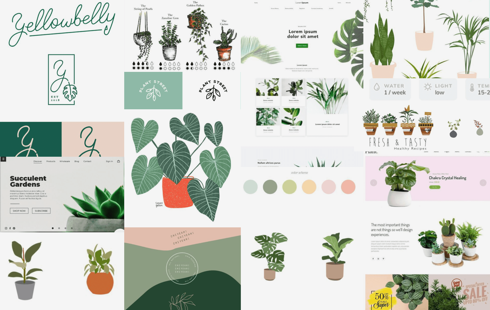
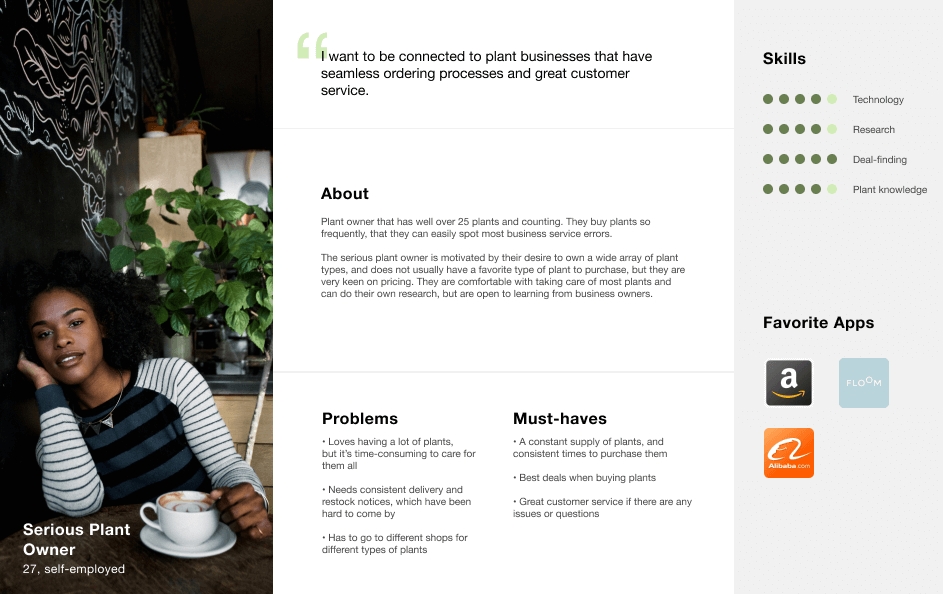
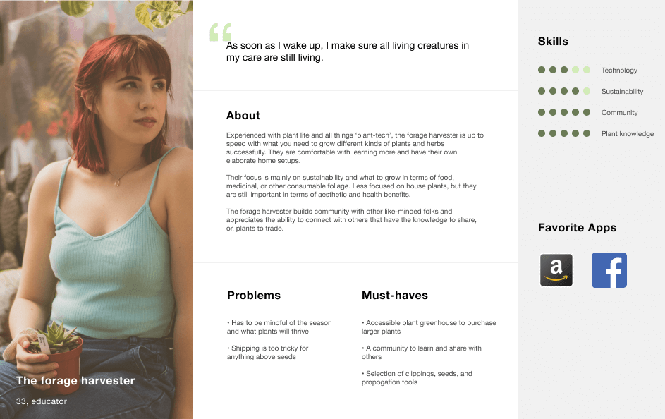
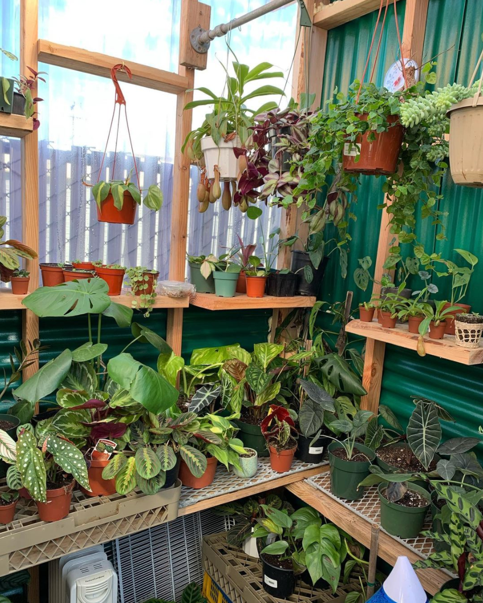
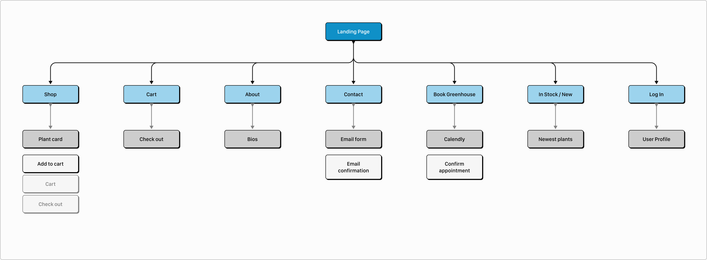

San Mateo's Family Greenhouse & Nursery
Launching a small business during the pandemic in 2020 is no small feat. What’s Growin’ On has quickly grown from their dream of selling plants to friends and family to Bay Area locals near and far. With this growth in their customer base, it also meant that they would soon outgrow their original way of conducting sales of plants - through their Instagram page.
What’s Growin’ On has reached a point in their business where they have enough customers to merit an online storefront, permanently housed on the web, where they can deliver on their plant products and continue booking customers to visit their in-person greenhouse with an intuitive system that allows them to track sales seamlessly. Since they are so new, they also need a brand presence that will carry them for many years to come.
Create a branding package that is both modern, yet family friendly, and that can be used for future product and merchandise as the business grows. In addition to branding, build a web app that is both straightforward (and no fuss) for plant buyers, and has an intuitive system for a clean handoff of the finished product so the business owners can self-maintain over a longer period of time.
UX Design
Visual Design
Branding & Identity
Web Development
User Surveys
Personas
User Stories & Flows
Competitive Analysis
Wireframes
User Testing
Branding Guidelines
Visual Design
Figma
Procreate
UserTesting.com
Maze

As the design lead for this client's web app needs, I used my multifaceted skills in research, information architecture, storytelling, branding, visual design, and web development to build a site and online shop the client loves, and would be able to navigate after a complete hand-off.
What’s Growin’ On reached out to me directly as they saw my recent design work (thanks, Instagram!) and wanted to discuss the next stage in their business and what I could potentially build for them. The husband and wife duo knew they wanted a website, and they needed a logo, but were also very interested in their local competition and how they could make their mark. We discussed what was going well (and not so well) for them in using Instagram as their main platform for selling plants and communicating with their customer base, and this would lead us to find the must-haves for their first website launch.
We decided on a Competitive Analysis between a few local small business plant brands to see where their strengths and weaknesses lied, as well as starting to build the overall branding story for What’s Growin’ On. How could they set themselves apart?

We discovered three main areas:
Overall, What’s Growin’ On should cater to their own brand identity concisely to set themselves apart. For example: their shop is for families, parents, & kids.
We used User Surveys to connect with customers and potential plant buyers to see what kind of insights they could pass along to us and inform the must-haves for the site. Some insights we collected:

Likes
Non-negotiables
80%
of users want plants that are easy to care for. This was something that would educate us further in using a filtered search approach for the shop.
80%
of users want plants that are priced well. This was yet another important step that let us know a filtered search option would be ideal.
88%
of users stated that they learn how to take care of plants from the internet. Since plant education is so important, how would this be easily translated to the shop to make the user’s lives easier, and provide a complete plant buying experience?
From these initial user survey results, I was able to craft more in-depth questions that I sent to respondents that mentioned they are open to further discussions. I wanted to learn about how these users purchase plants online and in-store (how prevalent are online shops, what is shipping like?), what makes sense to them when they are looking for plants (further validating filters), and any other key aspects of plant shopping in their experiences.

Key Insight: Crafting these questions prior to conducting further 1:1 user interviews was a newer process for me, but I felt it really helped me to dig in to a lot more information before the live interview, and prep the user to get in the sharing mindset as well. I will likely use this approach on future projects because the result was very positive and lessened the cognitive load for the users I spoke with.
Through the User Interviews, I discovered that gaining insights about users, while covering client needs when they are unclear about what they want, is a highly challenging task. Knowing this, I implemented several questions from a plant-purchaser perspective, as well as other larger questions like shipping and care instructions (customer service, support) which are main concerns to the client. It was important to tackle both of these areas simultaneously, and during interviews in a strategic way, so that there was minimal back-and-forth between myself and the users/customers so that they felt valued and not overwhelmed.
User Personas were crafted at this point, so that we could visualize the key users that would be using the What’s Growin’ On site.
Persona 1: Busy new plant business owner. This persona was focused on the client, as they would also be using the site on the backend to maintain the stock of the products, and answer questions directly from their customers.
Persona 2: Serious plant owner. This persona is for the plant owners that have well over 25 plants (and counting), and know what they are looking for. They are confident plant buyers, and familiar with plant care.
Persona 3: The forage harvester. This persona is for community minded, and those who like the act of caring for plants and growing their own sustainable practices.
Building the User Stories would entail a separation of high priority to low priority tasks so that we could achieve the MVP and have further direction for later iterations. For What’s Growin’ On, there are two main audiences:

Building the User Stories would entail a separation of high priority to low priority tasks so that we could achieve the MVP and have further direction for later iterations. For What’s Growin’ On, there are two main audiences:
| Primary | Secondary |
|---|---|
| Plant buyers | Shop owners |
At this point, it was time to start building the User Flows that would create structure to the overall site and pages within. Some main tasks that we needed to solve for: to see what’s in stock, where the care instructions would be accessed for each plant, how to book the greenhouse, how to add a plant to the shopping cart, and the check out flow.
*click image to view full User Flows
Content Strategy was largely built around the brand presence that What’s Growin’ On started to build for themselves via their Instagram page. I wanted to tie in their key points that made their shop so unique: a local, family-friendly plant shop that have a plant-professional edge. Using phrasing that they used to describe themselves thus far were pieced together throughout this process so that they could see the easy transition from Instagram to proper web app.
In particular, I decided to take their fun and friendly way of describing themselves (#plantfamily) and translate that into their About page. Their brand name is also a play on words, so I started to bring that to life in their content strategy to showcase their humor.
*click image to view full Sitemaps
With the information architecture in place, it was time to start sketching some initial page ideas. After several discussions with the client and building moodboards (and pinning a bunch of ideas to our shared Pinterest board), there was definitely a clear direction that started to surface in terms of the overall styling and look of the site.
The initial sketches gave us some bones to work with.
Building the digital wireframes allowed me to think about the functionality and different areas to test with users. Would a drop-down menu be appropriate for the shop, or should every page exist separately on the nav bar? What would users gravitate towards?
I knew going into this work that the branding would be a huge piece of the overall scope, largely because the client did not have much; not even a logo to go off of. But therein lies the beauty of not having much -- from there I had a lot of flexibility and could showcase different options that satisfied the client’s needs as well as spoke appropriately to customers while building their brand.
I collaborated with the clients a ton during this process, often working on several iterations and doing rounds of feedback loops to see if we were all still happy and excited about the direction it was heading. There were some challenges at this point with the logo options, but it wasn’t anything that additional testing and considerations couldn’t correct. When we hit a snag on what direction to head with the logo, I decided to do some preference and A/B testing to help. Users had some great feedback insights to share that made it a lot more clear for all parties (myself, and client) on what we should continue to work with, and what we should leave behind. Through this process, the clients decided on the look and feel of their site: modern with touches of fun, in an illustrative format.
Building out a Design System was a component that was very important to me at this stage. I wanted to ensure that this small, yet quickly growing business had a solid strategy that could translate through changes for years to come.
In addition to the design system, I also built a Style Guide that would encompass all of the unique storytelling aspects of What’s Growin’ On. Going with the modern + fun theme the clients envisioned, I built a style guide that showcased their product - the plants - in a way that was calming (selection of greens and muted color palette) but also current with typefaces that stood out (bebas neue and open sans condensed). Having different variations of the logo was also something that started to surface at this point, so that the client could have a wider range of applications as they expand on their business.
I put together several iterations of site mockups up against different logo options until we landed on a solid choice to move forward with. Without doing this, I felt as though we would be stuck in the unknown for many more weeks.
We were really proud of the branding guidelines we created, that helped guide the rest of the site in a very thoughtful way. Having a lot of flexibility has its challenges, as the clients had no strong preferences to start with, but I’m happy that they trusted my design intuition and research. It was many hours of sketching, testing, and ideating with different combinations of elements. Once I solidified the design system requirements and showed the clients the different logos + stylistic choices stacked against one another, this gave me a solid path and I was confident I could bring a solution that was both usable for customers and loved by the client.
Key Insight: Another great tool I started to use during this work was Loom -- I started recording different screen and logo walkthroughs that I would send to my client for their feedback. This gave them a safe space to reflect and not feel pressured by giving me their feedback on the spot. It’s definitely a tool I’ll continue to use for future client work.
I started to set up several user testing sessions at this stage to gain insights and feedback on the site in its current state. Some major questions we wanted to think about:
From these sessions, we knew the branding story was strong, and users were clearly distinguishing What’s Growin’ On as a plant seller that was well-established, yet family-friendly. The shop was coming together, and filters were easily accessible, though users were not gravitating towards them as we had originally thought. There was a higher frequency of ‘browsing all plants’ that we did not anticipate, but was not a blocker.
This is where I also started to see that there needed to be stronger messaging around the differences between the online shop and the in-person greenhouse. Users could navigate to the ‘book greenhouse’ pages easily, and saw the online ‘shop’ page easily, but when asked if they could describe the difference between the two, there were struggles present. Due to this, I decided that there could be greater clarity around what services are available. Adding what these are (online shop, delivery, arborist, greenhouse visits) would then be displayed on the main page and about page.
A final round of testing through different greenhouse information display options here gave us a clearer story to present to users and potential customers.
Question 1:
Answer:
Finalize.
Final mockups and deliverables were packaged at this step, and I started to investigate further what web builder might be best for the client and their needs. We decided that this would be a hand-off situation, and I would not be intervening for any design updates or maintenance, so we needed to find a hosting solution that the owners behind What’s Growin’ On would be able to use with little help.
Ultimately, I decided on Weebly because they would have a much easier time with self-maintenance, and the shop tools were very simplified and easy to integrate within their page. It also is a service that couples with their hosting on Porkbun, making it easy to manage all of their components. It would have been nice to go with a more open web builder (or built from scratch by me) so we could integrate the more customized design pieces, but I believe hosting on Weebly was the right choice for the client’s needs with their smaller budget and limited web experience. It was a solid choice for their first iteration.
Working with the clients behind What’s Growin’ On was a lot of fun. They had a lot of flexibility, were eager to give feedback, and enjoyed being a part of each step in the design process that I brought them into. They trusted me, which was a huge plus, and allowed me to discover insights that both they or I could never anticipate. Their customer base thus far is very loyal, and seemed excited at the thought of them opening up a web app that made purchasing more streamlined.
Although we ran into some snags with working with competing schedules and several rounds of feedback through the logo phase, it always felt like we were on the same page and conversations around next steps were encouraging. Setting up project management tooling that was clear and easy to digest, like Notion, really helped us all stay in the loop with what was going on each week.
Working with a small business client as a full service designer can be challenging, but What’s Growin’ On were the ideal clients. They were ready to be collaborative and learn about why it’s important to undertake several research pieces before ever creating mockups. I am excited to see their business grow, and to see what is next for them in the plant world!
{kind=link}
{kind=link}
{kind=link}